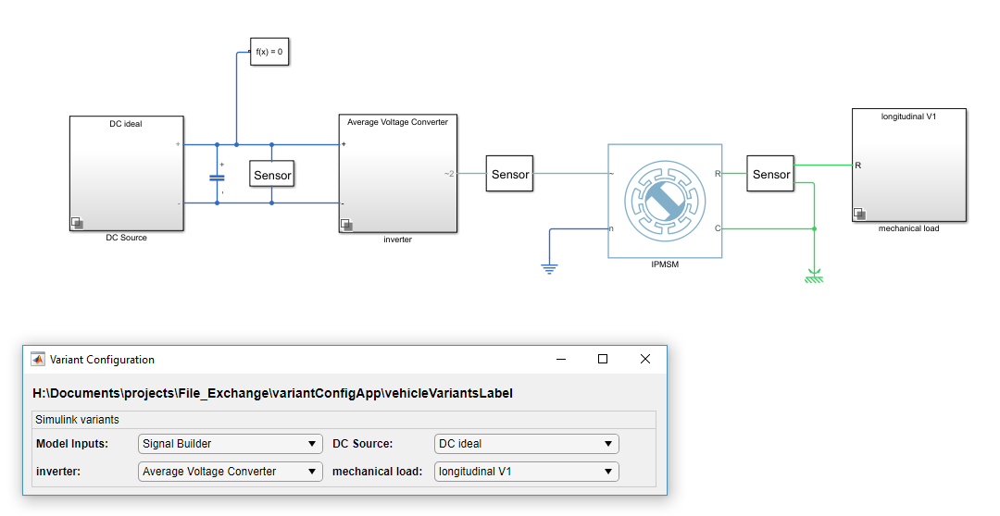
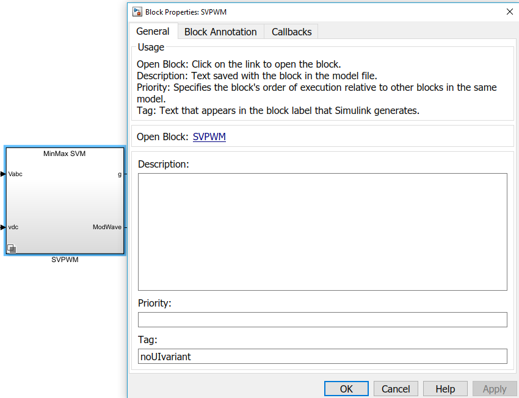

UI based management for Simulink variants
This example shows a way to specify variant configurations for Simulink models containing variant subsytems via an User Interface (UI). Simulink variant subsystem elements are listed in popup menus.
Contents
User Interface
To open the UI for a model:
variantConfigUI('vehicleVariantsLabel');
The MATLAB Code searches for all variant subsystems in the model and uses set_param to change 'VariantControlModel' and 'LabelModeActiveChoice'. Adding new variants also changes UI size. Changing a pop up menu's value immediately changes the active variant in the Simulink model.
Screenshot of model with UI

Ignore variants
To ignore certain variants for the UI, specify Tag 'noUIvariant' in the variant subsystem block properties
Screenshot of variant subsystem properties

Additional information
- If variant control mode is set to 'Expression' for a certain variant subsystem, it will be changed to 'Label' during the initial UI startup. A warning is shown in the Command Window.
- The shipped example requires Simscape license
- The UI lists variant Subsystems, that are located under a mask. If the active variant is selected via a mask initialization command, the generated popup menu does not have any affect
Further examples
variantConfigUI('sldemo_variant_subsystems_enum'); variantConfigUI('sldemo_variant_subsystems'); variantConfigUI('sdl_vehicle_4wd_testbed'); % requires Simscape Driveline